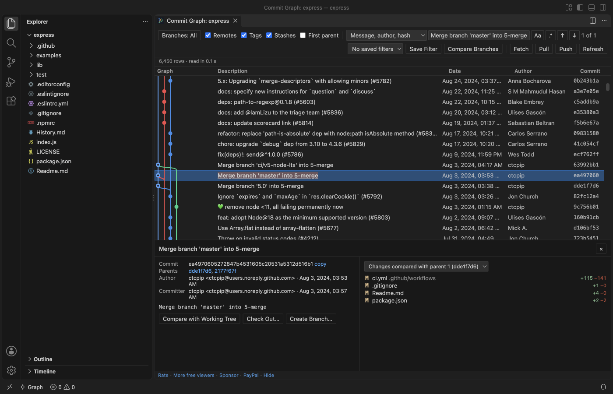

Open files in VS Code and Cursor / Developer files
See a git commit graph in VS Code
Git Commit Graph shows every branch, tag, remote branch and stash of a repository as one graph in VS Code, with a row for uncommitted changes on top. Search covers the whole history, by message, author or hash, by file path, or by changed text. Click a commit to see its files and diffs. The graph, search, compare, file and line history and every git action are free. Zovo Pro (USD 19 once) adds a branch comparison report, an interactive rebase editor and saved graph filters, with 3 free tries each.
Free, MIT license. Extension ID zovo.zovo-git-commit-graph, version 0.1.1. Needs VS Code 1.90.0 or newer.

Steps in VS Code
- Install Commit Graph from the Marketplace, or press Ctrl+P (Cmd+P on macOS) and run
ext install zovo.zovo-git-commit-graph. - Open a folder with a git repository. Click Graph in the status bar, or the graph button in the Source Control view, or run "Commit Graph: Show Commit Graph".
- Scroll the graph. Branches, tags, remotes and stashes are colored lanes. The Remotes, Tags, Stashes and First parent boxes change what is drawn.
- Click a commit to see its message, author, parents and changed files with +/- counts. Click a file for the VS Code diff.
- Type in Search all history and press Enter. Switch the mode to File path for commits that touched a file, or to Changed text (-S) to find the commit that added or removed a piece of code.
- Ctrl+click (Cmd+click on macOS) a second commit to list the files that differ between the two. Right-click a commit to check it out, cherry-pick, revert or reset. The git command shows in a confirmation before anything runs.
Where Zovo Pro saves time
The graph, full-history search, commit details and diffs, compare of two commits, file and line history, squash of a range and every git action are free, with no account and no time limit. The extension makes no network calls of its own.
Before a merge or a release, the branch comparison report shows what one branch has that the other does not. It writes a Markdown report with the commits on each side, the merge base, the changed files and the authors. The other two Pro tools are an interactive rebase editor (reorder, reword, squash, fixup and drop with drag and drop) and saved graph filters.
With Compare Branches (Report) (Zovo Pro)
- Click Compare Branches in the graph toolbar, or right-click a branch label and pick the Compare with ... (report) entry, named after your current branch.
- Pick the base branch, such as main, then the branch to compare.
- The report opens as a Markdown document. Escape or Cancel uses no free try.
Compare Branches (Report) works 3 times on your computer before it asks for a license, and a try counts only when you get a result. Opening a file shows no popup and no countdown.
Zovo Pro costs USD 19 once. It is not a subscription, and it turns on the Pro tools in every Zovo extension, not only Commit Graph. After a card payment (Stripe) your license key shows on the next page. In VS Code, run "Zovo Pro: Enter Zovo Pro license key" from the Command Palette and paste it. The key is checked on your computer, with no network call. With GitHub Sponsors, pick the "$19 one time" tier, then run "Zovo Pro: I already paid: unlock with GitHub Sponsors" and sign in with the same GitHub account. With PayPal, send USD 19 with "Zovo Pro" in the note and the key comes by email within a day.
A team of 5: USD 59 once, by card or by PayPal. Every rule and every Pro tool is on the Zovo Pro page.
Steps in Cursor, Windsurf or VSCodium
- Open the Extensions view with Ctrl+Shift+X (Cmd+Shift+X on macOS).
- Search for
zovo.zovo-git-commit-graphand click Install. Cursor, Windsurf and VSCodium install from Open VSX, where it is published aszovo/zovo-git-commit-graph. - If your editor has no gallery, download the .vsix from the Open VSX page and run "Extensions: Install from VSIX...".
- Then use it the same way as in VS Code.
What Commit Graph handles
- Large repositories. Only the rows on screen are drawn, and a test repository of 200,000 commits loads in seconds.
- Search of the full commit message, author, email, hash, file path, changed text (
git log -S) and changed lines regex (git log -G). - File history that follows renames, and the history of selected lines.
- Nested repositories and submodules, each in the repository picker.
What it does not do
- It needs git on your computer. It uses VS Code's git, or the path in
zovoGit.path. - It has no bisect tool. A bisect started in a terminal shows as a bar in the graph.
- Commits beyond
zovoGit.graph.maxCommits(500,000 by default) are not drawn. Path and changed-text searches still cover them. - Files larger than 50 MB at a commit are not loaded into a diff.
- It waits until you trust the folder.
Other options
- git log in a terminal. Free. Its graph option draws branches and merges as lines of text.
- git bisect. Free and built into git. It checks out commits half way between a good and a bad one until it finds the commit that broke the build.
- VS Code Source Control Graph. Built into VS Code. A simpler history graph in the Source Control view.
Install counts and Open VSX status were checked on 12 November 2026. Descriptions in quotes are the extensions' own.
Questions
How do I find the commit that broke the build?
Search with Changed text (-S) for the code that fails, or with File path for the file. Check out a commit from the right-click menu to test it. For a step by step search, run git bisect in a terminal. The extension has no bisect tool.
Does it run git commands without asking?
No. Checkout, merge, rebase, reset and the other actions show the git command in a confirmation. Nothing runs until you click the button.
Does it have inline blame?
No. It has file history and Show Line History for Selection, which lists the commits that changed the selected lines.
Does it work in Cursor or Windsurf?
Yes. Cursor, Windsurf and VSCodium install extensions from Open VSX. Search for the extension in their Extensions view and install it there.
More about Commit Graph
Read the Commit Graph page for every feature and setting, or the source code on GitHub.
Related guides
- Squash several commits in VS Code
- Read a HAR file offline in VS Code
- Read your Claude Code history in VS Code
- Compare two folders in VS Code
Zovo Pro and support
Zovo Pro: USD 19 once, every Zovo viewer. It turns on the Pro tools in this extension and in the other Zovo extensions you use. The free features stay free.
After a card payment your license key shows on the next page. Paste it with the command "Zovo Pro: Enter a key".
You can also support the work with no Pro:
Need your format supported?
Open a format request with a sample file, and I reply there whether it can be done. For USD 299 once, through this GitHub Sponsors tier, I add your file format or a missing feature to this extension, with tests, within 7 days.